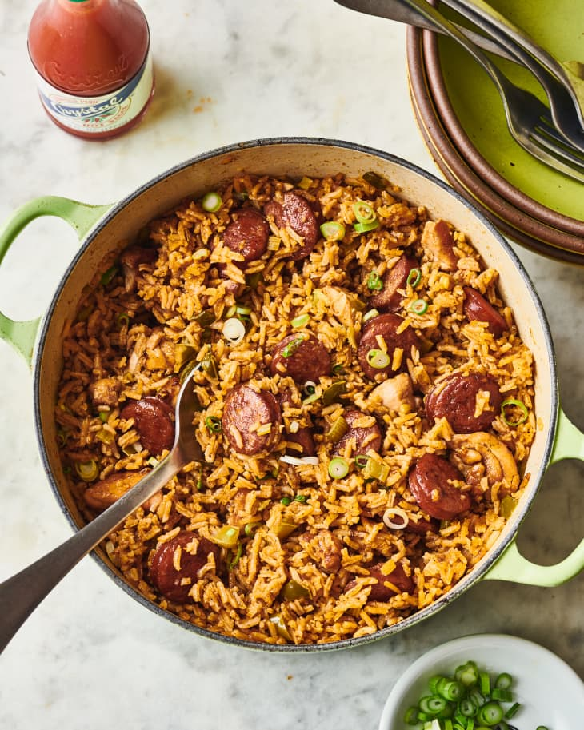

Jambalaya

Meal Description
The jambalaya I’m sharing here stars smoky andouille
sausage and chicken — a favorite duo of mine.
Smokiness from the sausage adds a depth to this
dish that tastes quintessentially Southern to me, and
is bound to be a crowd-pleaser with any carnivorous crew.
Here’s how to make it.
Ingredients
- 2 medium scallions
- 1 small yellow onion
- 3 medium stalks celery
- 1 medium green bell pepper
- 3 cloves garlic
- 1 (about 12-ounce) package andouille or smoked sausage
- 12 ounces boneless, skinless chicken thighs
- 1 1/2 teaspoons kosher salt, divided
- 2 tablespoons neutral oil, such as canola, divided
- 2 cups medium or long-grain white rice
- 2 1/2 cups water or low-sodium chicken broth
- Vinegar-based hot sauce (I like Crystal), for serving (optional)
Cooking Steps
- Make the Creole seasoning. Place 1 tablespoon garlic powder, 1 tablespoon onion powder, 1 tablespoon paprika, 1 teaspoon ground white pepper, and 1/2 teaspoon ground cayenne in a small bowl and stir to combine.
- Prepare the vegetables. Thinly slice 2 medium scallions and set aside for garnish. Prepare the following and add to a medium bowl: Dice 1 small yellow onion, 3 medium celery stalks, and 1 medium green bell pepper (about 1 cup each); mince 3 garlic cloves.
- Prepare the meats. Cut 1 package andouille sausage into 1/2-inch thick rounds. Cut 12 ounces boneless, skinless chicken thighs into bite-size pieces. Season the chicken with 1/2 teaspoon of the kosher salt and 1 tablespoon of the Creole seasoning.
- Brown the sausage. Heat 1 tablespoon of the canola oil in a large, heavy-bottomed pot or Dutch oven over medium-high heat until shimmering. You’ll know the oil is hot enough when a sprinkle of water pops and crackles. Add the sausage in a single layer and cook until browned on the cut sides, 3 to 4 minutes per side. Using tongs, transfer the sausage to a plate.
- Brown the chicken. Add the remaining 1 tablespoon canola oil to the drippings in the pot. Add the chicken and cook until browned, 2 to 3 minutes per side. Using tongs, transfer the chicken to the plate with the sausage.
- Sauté the vegetables. Add the onion and garlic mixture, remaining Creole seasoning, and remaining 1 1/2 teaspoon kosher salt. Cook, scraping up the browned bits from the bottom of the pot and stirring occasionally, until the onions are translucent, about 2 minutes.
- Add the rice and toast. Add 2 cups white rice and cook, stirring frequently, until the rice is opaque and toast-y smelling, about 3 minutes.
- Add the liquid and meats. Pour in 2 1/2 cups water or chicken broth and bring to a boil. Return the chicken and sausage and any accumulated juices to the pot and give everything one good stir to mix together. Cover, reduce the heat to low, and simmer undisturbed until the rice is cooked through, 20 to 30 minutes.
- Stir and let sit. Give the mixture a gentle stir on top. Cover again, remove from the heat, and let sit for 10 minutes. If the rice is still too wet, take the lid off so the extra liquid evaporates. If the rice is a little dry, keep the lid on a little longer to give the rice more time to absorb the liquid.
- Fluff and serve. Once rice is at desired consistency, fluff and serve. I like to garnish mine with the scallions and a few dashes of my favorite vinegar-based hot sauce.